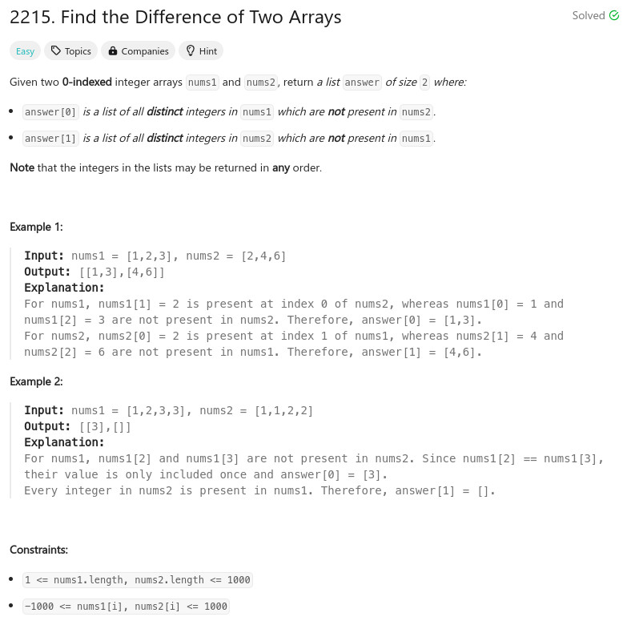

題目：

int find(int val, const int *nums, int len)
{
int cc = 0;
for (cc = 0; cc < len ; cc++) {
if (val == nums[cc]) {
return 1;
}
}
return 0;
}
int** findDifference(int* nums1, int nums1Size, int* nums2, int nums2Size, int* returnSize, int** returnColumnSizes)
{
int cc = 0;
int idx = 0;
int **r = malloc(sizeof(int *) * 2);
for (cc = 0; cc < 2; cc++) {
r[cc] = malloc(sizeof(int) * 1000);
}
*returnSize = 2;
*returnColumnSizes = malloc(sizeof(int) * 2);
idx = 0;
for (cc = 0; cc < nums1Size; cc++) {
if (find(nums1[cc], nums2, nums2Size) == 0) {
if (find(nums1[cc], r[0], idx) == 0) {
r[0][idx++] = nums1[cc];
}
}
}
(*returnColumnSizes)[0] = idx;
idx = 0;
for (cc = 0; cc < nums2Size; cc++) {
if (find(nums2[cc], nums1, nums1Size) == 0) {
if (find(nums2[cc], r[1], idx) == 0) {
r[1][idx++] = nums2[cc];
}
}
}
(*returnColumnSizes)[1] = idx;
return r;
}